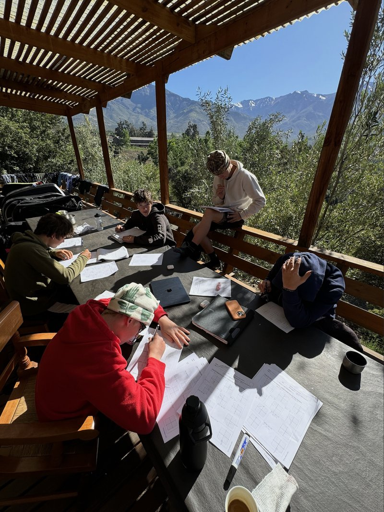
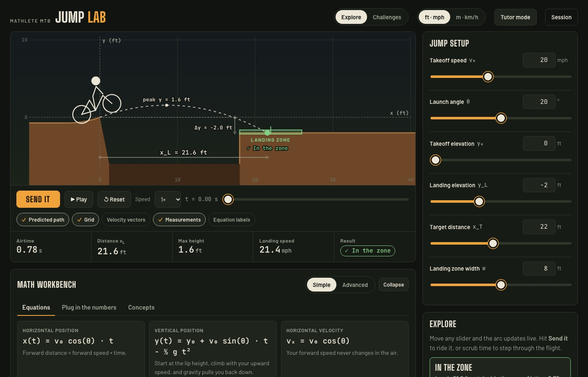
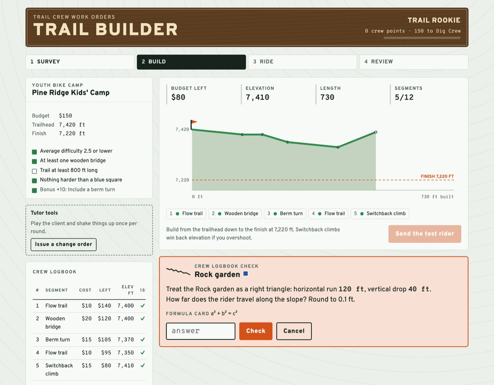
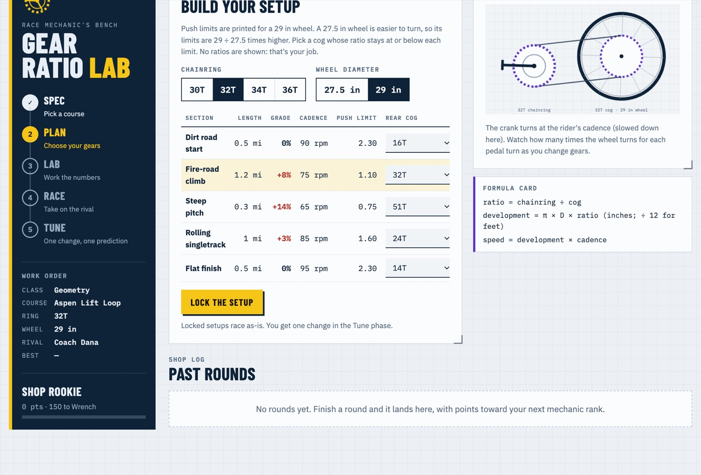

About Mathlete
Mathlete is an interest-driven academic learning platform that helps students develop a deeper understanding of math and science through the activities they already love.
Not every kid learns from a worksheet. Sometimes, you just have to start with something they love.
Mathlete connects math and science to the activities, interests, and experiences that make students curious. Through interactive challenges, real-world applications, and personalized learning experiences, we help students develop a deeper understanding of the world around them.
Why Mathlete
There’s more than one way to learn.
Traditional education often introduces academic concepts in isolation, asking students to understand abstract ideas before they’ve had an opportunity to see why they matter.
But not every student connects with learning in the same way. Some students learn through textbooks and lectures. Others learn by building, experimenting, exploring, moving, and solving problems in the world around them.
A student who struggles to stay engaged with a traditional math lesson might spend hours learning how to build a mountain bike, master a new trick, create something, or understand how a video game works.
What if we started there?
We believe students shouldn’t have to fit into a single approach to education to reach their potential.
We don’t believe students need to be passionate about every subject. We believe passion can be a powerful place to start.

Our approach
A different way to approach education.
Our approach is built around three principles that help connect students to meaningful academic learning.
-
01
Interest-driven education
Start with what makes them curious.
Every student has something they’re passionate about. It might be mountain biking, skiing, soccer, skateboarding, gaming, music, art, or building things.
We use those interests as an entry point into academic learning, connecting the familiar to the unfamiliar and helping students discover the mathematics and science behind the things they enjoy.
Interest is the starting point.
-
02
Experiential learning
Learn by doing, not just by listening.
Instead of relying only on lectures, videos, and worksheets, Mathlete creates opportunities for students to experiment, investigate, build, and solve problems.
Students might explore quadratic functions by modeling a mountain bike jump, study geometry by designing a trail, or understand physics by experimenting with speed and momentum. We want students to experience concepts, not simply memorize definitions.
Experience is the teaching method.
-
03
Personalized instruction
Every student has a different path.
Every student has a different starting point, pace, and way of approaching a problem. Mathlete supports learning that adapts to individual interests, academic needs, and progress.
Students can work through challenges at their own pace, revisit concepts they find difficult, explore ideas in greater depth, and get guidance that helps them move forward.
Personalization is how we support each learner.
Every kind of learner
For the students who don’t always fit the traditional classroom.
Not every student connects with conventional education.
Some need to move. Some need to see a concept before they understand it. Some learn best by experimenting, asking questions, and discovering things for themselves. Others need more time, more individual attention, or a reason to care about what they’re being asked to learn.
Students with ADHD, short attention spans, different learning preferences, or simply a disconnect with traditional instruction may particularly appreciate having another way to approach academic subjects.
We don’t believe those students need to be made to learn like everyone else. We believe education should make room for different ways of thinking, exploring, and understanding.
How we design every activity
- 01Engaging
Built around meaningful interests and real-world applications.
- 02Interactive
Students participate, experiment, and make their own discoveries.
- 03Manageable
Challenging concepts broken into smaller, achievable steps.
- 04Flexible
A pace and an approach that work for the student.
- 05Encouraging
Celebrates progress, persistence, curiosity, and problem solving.
Our goal is to help more students recognize that they’re capable learners, even if their strengths don’t always show up in a traditional classroom.
Human-centered
Technology should enhance human connection, not replace it.
-
Student practice
Labs and class activities students work through on their own, at their own pace.
Live today -
Learning insights
Progress, missed problems, and areas of difficulty, saved to the student’s account.
Live today -
Human guidance
A tutor or teacher steps in where the student needs help, then sends them back to practice.
Private tutoring today
As education becomes increasingly digital and AI-powered, we believe it’s more important than ever to keep real people involved in the learning process.
Technology can provide interactive experiences, immediate feedback, personalized practice, and insight into where a student might be struggling.
But it can’t replace the encouragement, understanding, mentorship, and human connection that make good teaching so valuable. We believe the future of education should combine the best of technology with the best of human instruction.
The Mathlete learning model
- Students practice independently throughout the week.
- The platform tracks progress, missed problems, and areas of difficulty.
- Teachers and tutors see where students need help. In development
- Short, purposeful check-ins let instructors clarify difficult concepts and give personal support.
- Students return to independent practice with a stronger understanding.
Sometimes a student needs just two minutes of guidance. Other times, they need a 20-minute conversation to work through a difficult concept.
Students with a Mathlete account can already see their own progress and review missed problems. Views that bring that picture to tutors and teachers are being built now.
Technology helps us understand where students are. People help them figure out where to go next.
Problem solving
Beyond getting the right answer. Learning how to solve problems.
At the heart of Mathlete is something bigger than math and science: the development of problem-solving skills.
We want students to understand how to approach unfamiliar challenges, break complicated problems into smaller pieces, recognize patterns, test ideas, learn from mistakes, and keep working toward a solution. These are skills that extend far beyond a classroom.
A student calculating the trajectory of a mountain bike jump is also learning how to model a problem, interpret information, make predictions, and apply mathematical reasoning. Those same skills carry into engineering, business, technology, and the countless challenges they’ll meet throughout life.
Will the rider clear the gap?
- model
- y = −0.1x² + x + 2
- interpret
- the lip is 2 ft up; the arc tops out at x = 5
- predict
- lands at x ≈ 11.7 ft
- test
- send it → ✓ in the landing zone
- apply
- same reasoning, any problem
- Curiosity
Asking why, and wanting to find out.
- Critical thinking
Weighing information and checking that an answer makes sense.
- Experimentation
Testing an idea, changing one thing, trying again.
- Persistence
Learning from mistakes and sticking with a hard problem.
- Application
Using the math on something real.
We want students to become confident thinkers, curious learners, and capable problem solvers. Because education shouldn’t just prepare students to pass their next test. It should prepare them to understand and navigate the world around them.
What learning looks like
Meaningful learning, built around real academic goals.
-
Curriculum-aligned academics
Real courses with clear learning objectives: Algebra 1, Geometry, Algebra 2, and Precalculus, with physics explored through the labs.
-
Interactive learning labs
Experiment with math and science concepts through simulations, challenges, and real-world problems.
-
Personalized practice
Choose a level, revisit difficult concepts, and go deeper when you’re ready. Many labs offer beginner through advanced challenges.
-
Progress and mastery tracking
Students with an account see their strengths and areas of difficulty, set goals, and get a saved list of missed problems to review.
With an account
-
Human guidance and mentorship
One-on-one tutoring today. Next: giving every teacher and tutor the information they need for targeted support.
Private tutoringTutor views in development
-
Learning beyond the screen
Every concept ties back to something physical: a jump, a trail, a bike, a mountain. The goal is math students recognize the next time they ride.
Where it starts
Where it starts: mountain biking.
Mathlete began with a simple idea: what if we taught students math and physics through something they already loved?
Mountain biking provides an incredible environment for exploring academic concepts. Students can explore quadratic functions through jump trajectories, geometry through trail design, statistics through race performance, and physics through speed, forces, and momentum.
There’s mathematics in every jump, geometry in every trail, physics in every turn, and problem solving in every challenge.
-

Jumping Quadratic functions and physics Engineering Lab -

Trail building Geometry and measurement Trail Crew -
 Race performance
Statistics and data analysis
Race Team
Race performance
Statistics and data analysis
Race Team
-

Bike setup Forces, ratios, and energy Bike Workshop
But mountain biking is just the beginning. The larger vision is an educational platform that connects academic learning to the many interests, activities, and passions that make students unique.
Because the best starting point for learning isn’t necessarily a textbook. Sometimes it’s a bike, a ball, a computer, a musical instrument, or a question a student has always wanted to answer.
- ✓ Mountain biking
- ✓ Skiing
- Soccer
- Skateboarding
- Music
- Gaming
- Art
- Building things
- Your question here
Our mission
To make meaningful academic learning more accessible, engaging, and relevant by connecting education to the things students are passionate about.
We want to help students develop a genuine curiosity for learning, build confidence in their abilities, and discover that they are capable of far more than they might have thought.
We believe there’s no single path to understanding, no single way to be a good student, and no reason that education should look exactly the same for everyone.
Find what they’re passionate about. Start there. Build from it.
Learning that starts with what they’re passionate about. Built around how they learn. Guided by people who care.